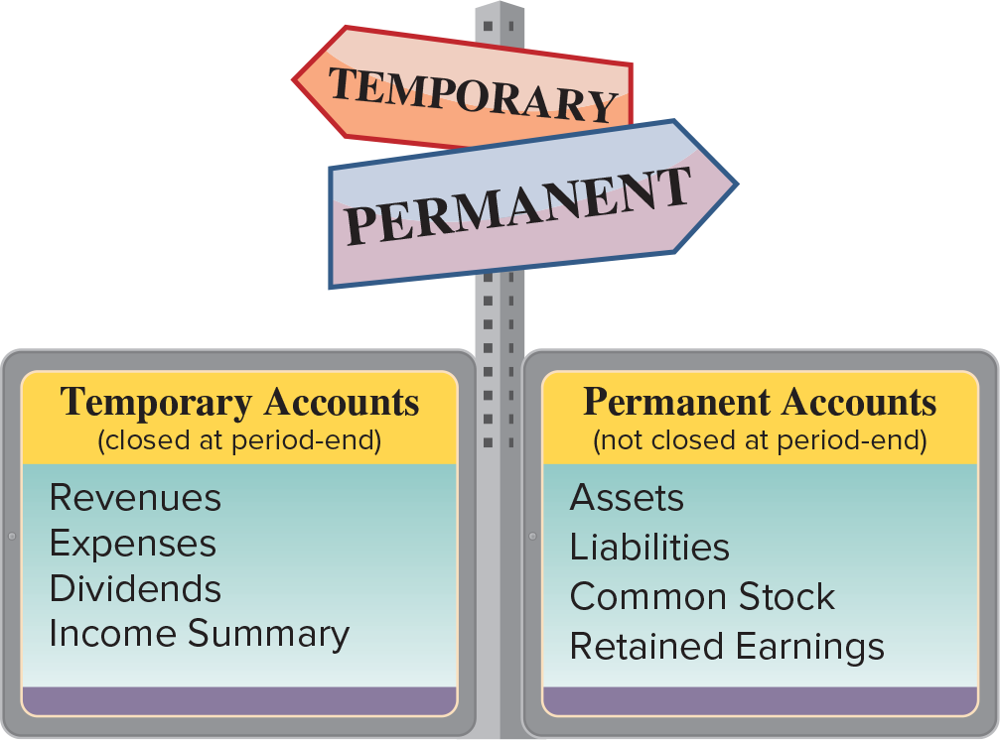
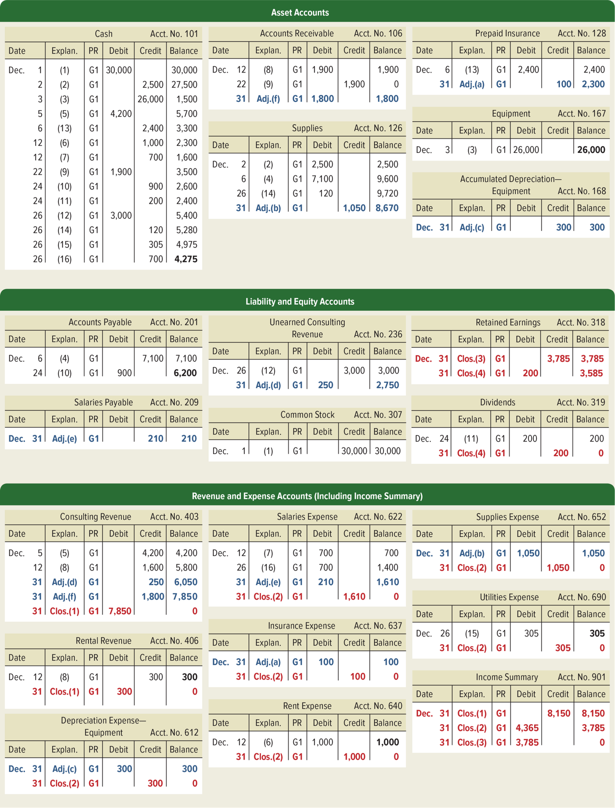
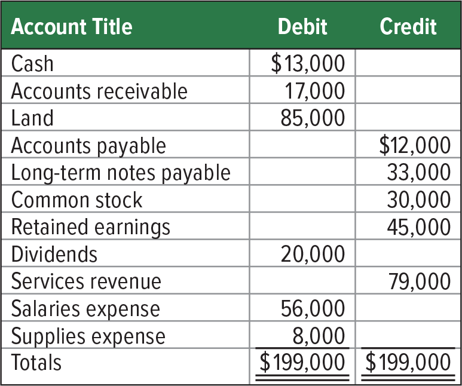
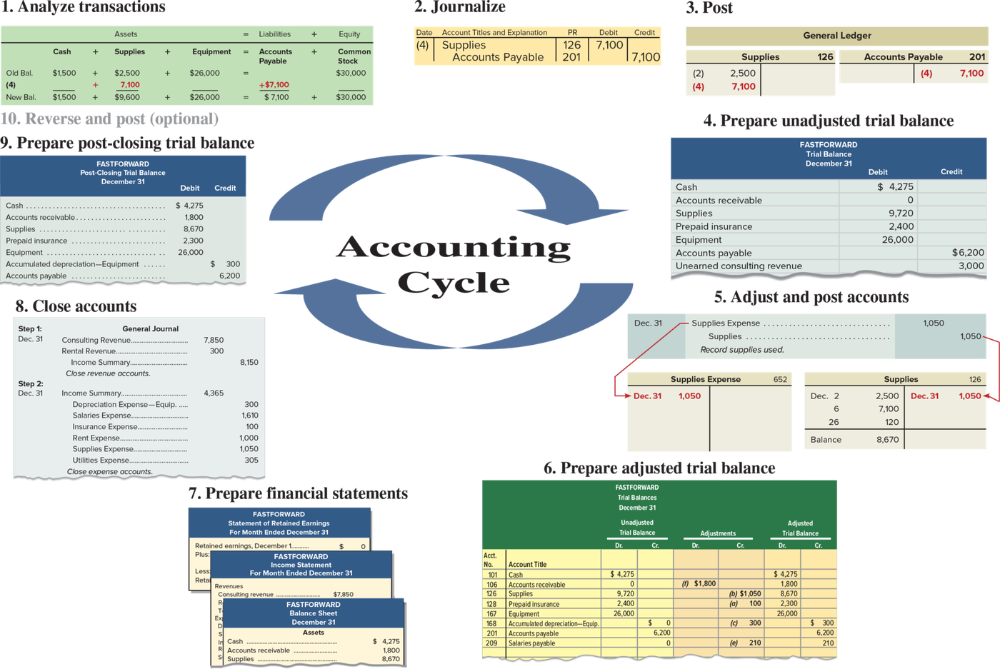

الفصل الثالث — الإقفال ودورة المحاسبة والميزانية المصنّفة
ACCT 203 · مبادئ المحاسبة المالية · Chapter 3: Adjusting Accounts for Financial Statements · القسم ٤ من ٤:
Closing, the Accounting Cycle, and the Classified Balance Sheet
الهدف P6: Prepare closing entries and a post-closing trial balance.
الهدف C2: Explain and prepare a classified balance sheet.
الهدف A1: Compute and analyze profit margin and current ratio.
آخر محطة في الفصل: نقفل الدفاتر، نلفّ الدورة، ونرتّب الميزانية
في الدروس اللي قبل سوّينا قيود التسوية (adjusting entries) وطلّعنا ميزان المراجعة المعدّل
(adjusted trial balance) والقوائم المالية (financial statements) لشركة FastForward. طيب وش يصير بعد ما تخلص القوائم؟
الإيرادات (revenues) والمصروفات (expenses) والتوزيعات (dividends) لازم ترجع صفر عشان الفترة الجاية تبدأ نظيفة — وهذا اسمه الإقفال
(closing، الهدف P6).
بعدها الكتاب يجمع كل اللي درسته في الفصلين ٢ و٣ في ١٠ خطوات اسمها الدورة المحاسبية (accounting cycle)،
ويعلّمك ترتّب الميزانية في أدراج: متداول وغير متداول (classified balance sheet، الهدف C2)، وآخر شي
نسبتين تحلّل فيهم الشركة: هامش الربح (profit margin) ونسبة التداول (current ratio، الهدف A1).
ركّز على ثلاث أشياء تجي في الاختبار كل مرة: أي الحسابات تنقفل وأيها لا، ترتيب قيود الإقفال الأربعة، ووين ينحط كل حساب في الميزانية المصنّفة. والأرقام كلها من الكتاب — اجمعها بنفسك وأنت تقرا، لا تصدّقني على طول.
الإقفال = تصفير حسابات الفترة (الإيرادات، المصروفات، التوزيعات) ونقل أثرها لـRetained Earnings (الأرباح المحتجزة). الحسابات المؤقتة تنقفل، والدائمة — يعني كل حسابات الميزانية — تكمّل برصيدها.
عملية الإقفال (closing process) تصير آخر الفترة المحاسبية، بعد ما تخلص القوائم المالية (الفترة المحاسبية = accounting period). فيها ثلاث خطوات:
- تحدّد الحسابات اللي بتنقفل (identify accounts for closing).
- تسجّل وترحّل قيود الإقفال (record and post the closing entries).
- تجهّز ميزان المراجعة بعد الإقفال (prepare a post-closing trial balance).
ولها غرضين (two purposes):
- تصفّر أرصدة الإيرادات والمصروفات والتوزيعات آخر كل فترة — عشان هالحسابات تقيس دخل وتوزيعات الفترة الجاية صح.
- تحدّث رصيد Retained Earnings، عشان يطابق الرقم اللي في الميزانية وفي قائمة الأرباح المحتجزة (statement of retained earnings).
| Temporary accounts — الحسابات المؤقتة | Permanent accounts — الحسابات الدائمة | |
|---|---|---|
| تعريف الكتاب | مرتبطة بفترة محاسبية وحدة | تعرض أنشطة مرتبطة بفترة مستقبلية وحدة أو أكثر |
| وش تشمل | كل حسابات قائمة الدخل (income statement: revenues الإيرادات وexpenses المصروفات) + حساب Dividends (التوزيعات) + حساب Income Summary (ملخص الدخل) | الأصول (assets) والخصوم (liabilities) وحقوق الملكية (equity) = كل حسابات الميزانية (balance sheet؛ ومنها Common Stock الأسهم العادية وRetained Earnings) |
| آخر الفترة | تنقفل — تستخدمها لفترة وحدة وبعدين تقفلها، ورصيدها يرجع صفر | ما تنقفل — رصيدها الختامي يكمّل للفترات الجاية |
والقاعدة اللي تختصر الموضوع: عملية الإقفال تنطبق على الحسابات المؤقتة بس.

لوحة إرشاد فيها سهمين: TEMPORARY وPERMANENT، وتحتها لوحتين. اليسار: Temporary Accounts (closed at period-end) = Revenues · Expenses · Dividends · Income Summary. اليمين: Permanent Accounts (not closed at period-end) = Assets · Liabilities · Common Stock · Retained Earnings. وش يجي منه بالاختبار: «أي حساب ما ينقفل؟» — احفظ القائمتين، كل وحدة أربعة بنود.
The closing process occurs at the end of an accounting period after financial statements are completed. In the closing process we (1) identify accounts for closing, (2) record and post the closing entries, and (3) prepare a post-closing trial balance. The closing process has two purposes. First, it resets revenue, expense, and dividends account balances to zero at the end of each period. This is done so that these accounts can properly measure income and dividends for the next period. Second, it updates the balance of the Retained Earnings account, which matches that reported in the balance sheet and the statement of retained earnings.
Temporary accounts relate to one accounting period. They include all income statement accounts, the dividends account, and the Income Summary account. They are temporary because such accounts are used for a period and then closed at period-end. The closing process applies only to temporary accounts.
Permanent accounts report on activities related to one or more future accounting periods. They include asset, liability, and equity accounts (all balance sheet accounts). Permanent accounts are not closed each period and carry their ending balance into future periods.
- Dividends مو حساب في قائمة الدخل، بس هو مؤقت وينقفل. واللي يحسب إن كل شي له علاقة بحقوق الملكية دائم = غلط: Common Stock وRetained Earnings دائمين، وDividends مؤقت.
- Income Summary مؤقت بعد — ينفتح وينقفل داخل عملية الإقفال نفسها.
- الإقفال يصير بعد إعداد القوائم المالية، مو قبلها. لو قفلت قبل، قائمة الدخل بتطلع كلها أصفار.
- لا تمشي ورا الاسم: Unearned Consulting Revenue (إيرادات غير مكتسبة) فيها كلمة revenue بس هي التزام ← دائمة. وAccumulated Depreciation (مجمّع الإهلاك — حساب مقابل contra account للأصل) دائم، عكس Depreciation Expense (مصروف الإهلاك) المؤقت.
Closing entries (قيود الإقفال) تنقل أرصدة الإيرادات والمصروفات والتوزيعات آخر الفترة للحساب الدائم Retained Earnings، على أربع خطوات، ومحطة النص اسمها Income Summary.
الكتاب يعطي سببين:
- حسابات الإيرادات والمصروفات والتوزيعات لازم تبدأ كل فترة برصيد صفر.
- Retained Earnings لازم يعكس إيرادات ومصروفات وتوزيعات الفترات اللي فاتت.
قائمة الدخل تعرض الإيرادات والمصروفات لفترة وحدة، والتوزيعات بعد تنعرض لفترة. وبما إن هالحسابات تسجّل معلومات كل فترة لحالها، لازم تبدأ كل فترة من الصفر. مثال الكتاب: لو Apple ما سوّت قيود إقفال، إيرادات الآيفون حق السنة اللي فاتت بتنحسب مع إيرادات السنة الحالية.
Income Summary (ملخص الدخل) = حساب مؤقت تستخدمه بس في عملية الإقفال: فيه دائن (credit) بمجموع الإيرادات (والمكاسب gains) ومدين (debit) بمجموع المصروفات (والخسائر losses). يعني رصيده بعد أول خطوتين = صافي الدخل (net income) أو صافي الخسارة (net loss).
| الخطوة | وش تسوّي | شكل القيد | ليش مدين / دائن |
|---|---|---|---|
| 1 | تقفل الأرصدة الدائنة (حسابات الإيرادات) في Income Summary | مدين كل إيراد · دائن Income Summary بالمجموع | الإيراد رصيده الطبيعي (normal balance) دائن، فتصفّره بـمدين |
| 2 | تقفل الأرصدة المدينة (حسابات المصروفات) في Income Summary | مدين Income Summary بالمجموع · دائن كل مصروف | المصروف رصيده مدين، فتصفّره بـدائن |
| 3 | تقفل Income Summary في Retained Earnings | (لو ربح) مدين Income Summary · دائن Retained Earnings | ينقل صافي الدخل لحقوق الملكية |
| 4 | تقفل Dividends في Retained Earnings | مدين Retained Earnings · دائن Dividends | التوزيعات رصيدها مدين فتصفّرها بدائن، وهي تنقص الأرباح المحتجزة |
بعد ما تترحّل قيود الإقفال، حسابات الإيرادات والمصروفات والتوزيعات وIncome Summary كلها رصيدها صفر، ويقولون عنها إنها مقفلة أو مصفّاة (closed or cleared).
![Exhibit 3.15, the four-step closing process for FastForward drawn with T-accounts: six expense accounts on the left (300, 1,610, 100, 1,000, 1,050 and 305) feed step 2 into the debit side of Income Summary as 4,365; two revenue accounts on the right (7,850 and 300) feed step 1 into its credit side as 8,150; step 3 moves the 3,785 Income Summary balance to the credit side of Retained Earnings; and step 4 moves the 200 Dividends balance to its debit side, leaving Retained Earnings with a 3,585 balance.](../img/acct203/exhibit-3-15.png)
هذا Exhibit 3.15: كل الحسابات مرسومة T-accounts (حسابات على شكل T) بأرصدة FastForward المعدّلة. يسار: صندوق Expense Accounts فيه ست مصروفات (Depreciation Expense—Equip. 300 · Salaries 1,610 · Insurance 100 · Rent 1,000 · Supplies 1,050 · Utilities 305)، وكل رصيد مكتوب بالأصفر في الجهة الدائنة (هذا قيد الإقفال) وخطوطها تتجمّع في الدائرة 2 وتدخل مدين 4,365 في Income Summary اللي في النص. يمين: صندوق Revenue Accounts (Consulting Revenue 7,850 · Rental Revenue 300) يتقفل بـمدين ويدخل الدائرة 1 دائن 8,150. Income Summary يطلع رصيده 3,785 ويروح بالدائرة 3 دائن لـRetained Earnings (تحت يمين). وDividends 200 (تحت النص) يروح بالدائرة 4 مدين لـRetained Earnings، فيصير رصيده 3,585. فوق يمين المفتاح: 1 Close income statement credit balances · 2 Close income statement debit balances · 3 Close Income Summary account · 4 Close dividends account.
![Exhibit 3.16, FastForward's adjusted trial balance at December 31, 2021 with totals of 47,610 on each side, and the four closing entries in the general journal (colored arrows link the revenues to step 1, the expenses to step 2 and Dividends to step 4): step 1 debits Consulting Revenue 7,850 and Rental Revenue 300 and credits Income Summary 8,150; step 2 debits Income Summary 4,365 and credits the six expense accounts; step 3 debits Income Summary and credits Retained Earnings 3,785; and step 4 debits Retained Earnings and credits Dividends 200.](../img/acct203/exhibit-3-16.png)
هذا Exhibit 3.16. يسار (أخضر): FASTFORWARD Adjusted Trial Balance December 31, 2021 ومجموعه $47,610 = $47,610 — ولاحظ Retained earnings رصيده 0 لأن الشركة بدأت في ديسمبر. يمين: General Journal (دفتر اليومية العامة) فيه من Step 1 لين Step 4 كلها بتاريخ Dec. 31. الأسهم تربط الجهتين: أزرق من الإيرادات للخطوة ١، أحمر من المصروفات للخطوة ٢، وأسود من Dividends للخطوة ٤. القيود نفسها مكتوبة تحت، كل خطوة في جدول لحالها.
Step 1: Close Credit Balances in Revenue Accounts to Income Summary
| Date | Account titles and explanation | Debit | Credit |
|---|---|---|---|
| Dec. 31 | Consulting Revenue | 7,850 | |
| Rental Revenue | 300 | ||
| Income Summary | 8,150 | ||
| Close revenue accounts. |
الإيرادات رصيدها الطبيعي دائن، فعشان ترجع صفر نخلّيها مدين بنفس رصيدها (7,850 و300). ومجموعهم 8,150 ينزل دائن في Income Summary = مجموع إيرادات الفترة.
Step 2: Close Debit Balances in Expense Accounts to Income Summary
| Date | Account titles and explanation | Debit | Credit |
|---|---|---|---|
| Dec. 31 | Income Summary | 4,365 | |
| Depreciation Expense—Equipment | 300 | ||
| Salaries Expense | 1,610 | ||
| Insurance Expense | 100 | ||
| Rent Expense | 1,000 | ||
| Supplies Expense | 1,050 | ||
| Utilities Expense | 305 | ||
| Close expense accounts. |
المصروفات رصيدها مدين، فنصفّر كل واحد بـدائن برصيده. ومجموعها 300 + 1,610 + 100 + 1,000 + 1,050 + 305 = 4,365 ينزل مدين في Income Summary.
Step 3: Close Income Summary to Retained Earnings
| Date | Account titles and explanation | Debit | Credit |
|---|---|---|---|
| Dec. 31 | Income Summary | 3,785 | |
| Retained Earnings | 3,785 | ||
| Close Income Summary account. |
بعد الخطوتين، Income Summary فيه دائن 8,150 ومدين 4,365 ← رصيده دائن 3,785 = صافي دخل ديسمبر. نصفّره بـمدين 3,785، ونحطه دائن في Retained Earnings لأن الربح يزيد الأرباح المحتجزة (رصيدها الطبيعي دائن).
Step 4: Close Dividends Account to Retained Earnings
| Date | Account titles and explanation | Debit | Credit |
|---|---|---|---|
| Dec. 31 | Retained Earnings | 200 | |
| Dividends | 200 | ||
| Close Dividends account. |
Dividends رصيده مدين 200، نصفّره بـدائن. والطرف المدين Retained Earnings لأن التوزيعات تنقص الأرباح المحتجزة — ولاحظ إنها ما مرّت على Income Summary أبداً.
النتيجة في دفتر الأستاذ (ledger) — الحسابين اللي يهمّونك بعد الإقفال:
| Income Summary | |
|---|---|
| Debit | Credit |
| Clos.(2) 4,365 | Clos.(1) 8,150 |
| Clos.(3) 3,785 | |
| Balance 0 | |
| Retained Earnings | |
|---|---|
| Debit | Credit |
| Balance 0 | |
| Clos.(4) 200 | Clos.(3) 3,785 |
| Balance 3,585 | |
شيّك بنفسك: 0 + 3,785 − 200 = 3,585. وIncome Summary: 8,150 − 4,365 − 3,785 = 0. والكتاب ينبّه: Retained Earnings هو الحساب الدائم الوحيد في Exhibit 3.15 — يعني هو ما ينقفل، بس Income Summary ينقفل فيه.

هذا Exhibit 3.17: دفتر الأستاذ كامل لـFastForward بعد التسويات والإقفال، كل حساب بأعمدة Date · Explan. · PR · Debit · Credit · Balance ورقم حساب (والـPR = posting reference مرجع الترحيل). فيه ثلاث أشرطة خضراء: Asset Accounts، Liability and Equity Accounts، وRevenue and Expense Accounts (Including Income Summary). كيف تقرأه: اللي بالـأزرق قيود التسوية من Adj.(a) لين Adj.(f)، واللي بالـأحمر قيود الإقفال من Clos.(1) لين Clos.(4). كل الإيرادات والمصروفات وDividends وIncome Summary (Acct. No. 901: 8,150 ← 3,785 ← 0) آخر رصيد فيها 0، وRetained Earnings (Acct. No. 318) ينتهي 3,585. والأرصدة الباقية (Cash 4,275، Supplies 8,670 …) هي نفسها اللي بتشوفها في ميزان المراجعة بعد الإقفال في المفهوم الجاي.
الكتاب يعطيك ميزان المراجعة المعدّل لشركة Magic Company ويطلب قيود الإقفال.

جدول بثلاث أعمدة Account Title · Debit · Credit. المجموع $199,000 = $199,000. الحسابات المؤقتة اللي بتنقفل هنا أربعة بس: Services revenue 79,000 (دائن)، Salaries expense 56,000 وSupplies expense 8,000 (مدين)، وDividends 20,000 (مدين). الباقي دائم ويبقى زي ما هو.
| Date | Account titles and explanation | Debit | Credit |
|---|---|---|---|
| Dec. 31 | Services Revenue | 79,000 | |
| Income Summary | 79,000 | ||
| Close revenue account. | |||
| Dec. 31 | Income Summary | 64,000 | |
| Salaries Expense | 56,000 | ||
| Supplies Expense | 8,000 | ||
| Close expense accounts. | |||
| Dec. 31 | Income Summary | 15,000 | |
| Retained Earnings | 15,000 | ||
| Close Income Summary. | |||
| Dec. 31 | Retained Earnings | 20,000 | |
| Dividends | 20,000 | ||
| Close Dividends account. |
- الإيراد (دائن 79,000) يتصفّر بـمدين، ويروح دائن لـIncome Summary.
- المصروفين (مدين) يتصفّرون بـدائن: 56,000 + 8,000 = 64,000 مدين في Income Summary.
- Income Summary صار دائن 79,000 − 64,000 = 15,000 = صافي دخل ← مدين Income Summary / دائن Retained Earnings.
- Dividends (مدين 20,000) يتصفّر بـدائن، والمدين على Retained Earnings لأنه ينقصه.
والرصيد الجديد لـRetained Earnings: 45,000 + 15,000 − 20,000 = 40,000 — وهو نفس الرقم اللي بتلقاه في ميزانية Magic المصنّفة في المفهوم الرابع.
Closing entries transfer the end-of-period balances in revenue, expense, and dividends accounts to the permanent Retained Earnings account. Closing entries are necessary at the end of each period after financial statements are prepared because
- Revenue, expense, and dividends accounts must begin each period with zero balances.
- Retained Earnings must reflect prior periods’ revenues, expenses, and dividends.
To close revenue and expense accounts, we transfer their balances to Income Summary. Income Summary is a temporary account only used for the closing process that contains a credit for total revenues (and gains) and a debit for total expenses (and losses). The Income Summary balance, which equals net income or net loss, is transferred to the Retained Earnings account. The Dividends account balance is transferred to the Retained Earnings account. After closing entries are posted, the revenue, expense, dividends, and Income Summary accounts have zero balances and are said to be closed or cleared.
Step 1: Close Credit Balances in Revenue Accounts to Income Summary
Step 2: Close Debit Balances in Expense Accounts to Income Summary
Step 3: Close Income Summary to Retained Earnings
Step 4: Close Dividends Account to Retained Earnings
- الترتيب: إيرادات ← مصروفات ← Income Summary ← Dividends. التوزيعات ما تمرّ على Income Summary أبداً — تنقفل مباشرة في Retained Earnings، لأنها مو مصروف.
- عشان تصفّر حساب، سوّ عكس رصيده الطبيعي: الإيراد (دائن) ← مدين · المصروف (مدين) ← دائن · التوزيعات (مدين) ← دائن. الاختيار اللي يقول «مدين Dividends / دائن Retained Earnings» مقلوب.
- لو فيه صافي خسارة، Income Summary رصيده مدين، فالخطوة ٣ تنعكس: مدين Retained Earnings / دائن Income Summary.
- رصيد Income Summary بعد الخطوة ٢ = صافي الدخل، مو مجموع الإيرادات. في FastForward = 3,785 مو 8,150.
- فخ المصطلحات: الكتاب يستخدم شركة مساهمة (corporation): Common Stock وDividends وRetained Earnings. بعض ملخصات الكلاس تستخدم منشأة فردية (sole proprietorship): Owner's Capital وOwner's Withdrawals (أو Drawing). نفس الفكرة بشكل منشأة ثاني، ونفس قواعد المدين والدائن: الـcapital بجهة common stock، والمسحوبات بجهة dividends. فلو شفت «مدين Income Summary / دائن Owner's Capital» أو «مدين Owner's Capital / دائن Withdrawals» = نفس الخطوة ٣ و٤ بالضبط.
Post-closing trial balance (ميزان المراجعة بعد الإقفال) = قائمة بالحسابات الدائمة وأرصدتها بعد كل قيود الإقفال. وaccounting cycle (الدورة المحاسبية) = خطوات إعداد القوائم المالية — ١٠ خطوات تتكرر كل فترة.
فيه حسابات الميزانية بس (الدائمة). ويتحقق من شيئين:
- مجموع المدين = مجموع الدائن للحسابات الدائمة.
- كل الحسابات المؤقتة رصيدها صفر.
وغالباً هو آخر خطوة في العملية المحاسبية. هذا ميزان FastForward (Exhibit 3.18):
Post-Closing Trial Balance
December 31, 2021
| Debit | Credit | |
| Cash | $ 4,275 | |
| Accounts receivable | 1,800 | |
| Supplies | 8,670 | |
| Prepaid insurance | 2,300 | |
| Equipment | 26,000 | |
| Accumulated depreciation—Equipment | $ 300 | |
| Accounts payable | 6,200 | |
| Salaries payable | 210 | |
| Unearned consulting revenue | 2,750 | |
| Common stock | 30,000 | |
| Retained earnings | 3,585 | |
| Totals | $43,045 | $43,045 |
اجمعها: المدين 4,275 + 1,800 + 8,670 + 2,300 + 26,000 = 43,045، والدائن 300 + 6,200 + 210 + 2,750 + 30,000 + 3,585 = 43,045. لاحظ: ما فيه ولا إيراد ولا مصروف ولا Dividends، وRetained earnings صار 3,585 بعد ما كان 0 في الميزان المعدّل (اللي مجموعه 47,610).
وشيّك المعادلة المحاسبية (accounting equation) بعد: الأصول 4,275 + 1,800 + 8,670 + 2,300 + 26,000 − 300 = 42,745 (مجمّع الإهلاك accumulated depreciation حساب مقابل ينطرح من الأصول)، والخصوم 6,200 + 210 + 2,750 = 9,160، وحقوق الملكية 30,000 + 3,585 = 33,585 ← 9,160 + 33,585 = 42,745 ✔.
موقف من الكتاب (Decision Maker — Staff Accountant): صاحبتك توريك ميزان مراجعة بعد الإقفال وفيه سطر rent expense. كيف تعرف إن فيه غلط؟ لأن Rent Expense حساب مؤقت، وميزان ما بعد الإقفال فيه حسابات دائمة بس.
Accounting cycle = الخطوات في إعداد القوائم المالية. اسمها دورة لأن الخطوات تتكرر كل فترة تقرير. وتوقيتها:
- الخطوات من 1 لين 3 تصير بشكل مستمر كل ما الشركة دخلت في عمليات.
- الخطوات من 4 لين 9 تنسوّى آخر الفترة.
- الخطوة 10 (القيود العكسية reversing entries) اختيارية، ومشروحة في Appendix 3C.

هذا Exhibit 3.19: في النص سهمين دائريين مكتوب بينهم Accounting Cycle، وحولهم الخطوات العشر مع الساعة، ومن 1 لين 9 كل خطوة بمثال من FastForward (العاشرة عنوان بس). فوق: 1 Analyze transactions (جدول المعادلة لعملية شراء supplies 7,100 بالآجل) ← 2 Journalize (قيد: مدين Supplies 7,100، دائن الذمم الدائنة (Accounts Payable) 7,100) ← 3 Post (حسابي Supplies وAccounts Payable في General Ledger — دفتر الأستاذ العام). يمين: 4 Prepare unadjusted trial balance ← 5 Adjust and post accounts (Supplies Expense 1,050 / Supplies 1,050). تحت: 6 Prepare adjusted trial balance ← 7 Prepare financial statements. يسار: 8 Close accounts (قيود الخطوة ١ و٢) ← 9 Prepare post-closing trial balance ← وفوقها 10 Reverse and post (optional). وش يجي منه بالاختبار: ترتيب الخطوات — يعطيك خطوة ويسألك وش اللي بعدها.
| # | Step | Explanation (book) | بالعربي |
|---|---|---|---|
| 1. | Analyze transactions | Analyze transactions to prepare for journalizing. | تحلّل العمليات عشان تجهّز لتسجيلها في اليومية |
| 2. | Journalize | Record accounts, including debits and credits, in a journal. | تسجّل الحسابات بمدينها ودائنها في دفتر اليومية |
| 3. | Post | Transfer debits and credits from the journal to the ledger. | الترحيل: تنقل المدين والدائن من اليومية لدفتر الأستاذ |
| 4. | Prepare unadjusted trial balance | Summarize unadjusted ledger accounts and amounts. | تلخّص حسابات الأستاذ ومبالغها قبل التسوية |
| 5. | Adjust and post | Record adjustments to bring account balances up to date; then journalize and post. | تسجّل التسويات عشان الأرصدة تصير محدّثة، وبعدين تقيّدها وترحّلها |
| 6. | Prepare adjusted trial balance | Summarize adjusted ledger accounts and amounts. | تلخّص الحسابات ومبالغها بعد التسوية |
| 7. | Prepare financial statements | Use adjusted trial balance to prepare financial statements. | تطلّع القوائم المالية من الميزان المعدّل |
| 8. | Close accounts | Journalize and post entries to close temporary accounts. | تقيّد وترحّل قيود إقفال الحسابات المؤقتة |
| 9. | Prepare post-closing trial balance | Test clerical accuracy of the closing procedures. | تختبر الدقة الكتابية لإجراءات الإقفال |
| 10. | Optional: Reverse and post | Reverse certain adjustments in the next period—optional step; see Appendix 3C. | تعكس بعض التسويات في الفترة الجاية — خطوة اختيارية |
حاشية الجدول في الكتاب: الخطوات 4 و6 و9 ممكن تنسوّى على ورقة عمل (work sheet — Appendix 3B). ورقة العمل تفيد في تخطيط التسويات، بس التسويات (الخطوة 5) لازم دايماً تتقيّد وتترحّل. والخطوات 3 و4 و6 و9 تصير تلقائياً في النظام المحوسب.
A post-closing trial balance is a list of permanent accounts and their balances after all closing entries. Only balance sheet (permanent) accounts are on a post-closing trial balance. A post-closing trial balance verifies that (1) total debits equal total credits for permanent accounts and (2) all temporary accounts have zero balances.
The accounting cycle is the steps in preparing financial statements. It is called a cycle because the steps are repeated each reporting period. Exhibit 3.19 shows the 10 steps in the cycle. Steps 1 through 3 occur regularly as a company enters into transactions. Steps 4 through 9 are done at the end of a period. Reversing entries in step 10 are optional and are explained in Appendix 3C.
- أي إيراد أو مصروف أو Dividends أو Income Summary في ميزان ما بعد الإقفال = غلط (مثال الكتاب: rent expense).
- Retained earnings في ميزان ما بعد الإقفال = الرصيد الختامي (3,585)، مو الافتتاحي (0) اللي في الميزان المعدّل.
- الترتيب: ميزان غير معدّل (4) ← تسويات (5) ← ميزان معدّل (6) ← قوائم (7) ← إقفال (8) ← ميزان بعد الإقفال (9). القوائم قبل الإقفال دايماً.
- العدد 10 خطوات، والعاشرة بس اختيارية. اختيار يقول «الإقفال اختياري» أو «9 خطوات» = غلط.
- ورقة العمل (work sheet) أداة مساعدة — ما تغني عن تقييد التسويات في اليومية وترحيلها.
الميزانية غير المصنّفة (unclassified balance sheet) تقسم الحسابات بشكل عام لثلاث: أصول، خصوم، حقوق ملكية. الميزانية المصنّفة (classified balance sheet) ترتّب الأصول والخصوم في مجموعات فرعية — وأهم تقسيم: متداول (قصير الأجل) وغير متداول (طويل الأجل).
مثال الميزانية غير المصنّفة: ميزانية FastForward في Exhibit 3.14 (الدرس اللي قبل). بس المصنّفة غالباً فيها التصنيفات اللي في Exhibit 3.20 — وما فيه شكل إلزامي (there is no required layout).
الحد بين المتداول وغير المتداول: البنود المتداولة متوقّع تستحق (تنحصّل أو تندفع) خلال سنة أو الدورة التشغيلية، اللي أطول فيهم (whichever is longer).
Operating cycle (الدورة التشغيلية) = المدة من لما تصرف النقد عشان تشتري سلع وخدمات، لين يرجع لك النقد من بيع السلع والخدمات. أغلب الدورات التشغيلية أقل من سنة، فأغلب الشركات تصنّف على سنة. والكتاب يقول: افترض إن الدورة التشغيلية سنة، إلا لو قلنا غير كذا.
| Assets | Liabilities and Equity |
|---|---|
| Current assets | Current liabilities |
| Noncurrent assets | Noncurrent liabilities |
| Long-term investments | Equity |
| Plant assets | |
| Intangible assets |
الأصول غير المتداولة تحتها ثلاث فئات: long-term investments وplant assets وintangible assets.
قاعدة الترتيب: الأصول المتداولة قبل غير المتداولة، والخصوم المتداولة قبل غير المتداولة. وداخل المتداول، البنود مرتّبة حسب سرعة تحوّلها لنقد أو دفعها نقداً.
| التصنيف | التعريف | أمثلة الكتاب |
|---|---|---|
| Current assets الأصول المتداولة |
نقد وموارد ثانية متوقّع تنباع أو تنحصّل أو تنستخدم خلال سنة أو الدورة التشغيلية، اللي أطول فيهم | cash · short-term investments · accounts receivable · short-term notes receivable · merchandise inventory (goods for sale) · prepaid expenses |
| Long-term investments الاستثمارات طويلة الأجل |
notes receivable واستثمارات في أسهم وسندات لما يكون متوقّع تنمسك أكثر من سنة أو الدورة التشغيلية (الأطول) | notes receivable · investments in stocks and bonds |
| Plant assets الأصول الثابتة |
أصول ملموسة (tangible)، طويلة العمر، والشركة تستخدمها لإنتاج أو بيع المنتجات والخدمات. أسماء ثانية: property, plant, and equipment (PP&E) أو fixed assets | equipment · machinery · buildings · land (المستخدمة في التشغيل) |
| Intangible assets الأصول غير الملموسة |
أصول طويلة الأجل تفيد التشغيل بس ما لها شكل مادي. قيمتها من الامتيازات أو الحقوق اللي يملكها المالك أو تنعطى له | patents · trademarks · copyrights · franchises · goodwill |
| Current liabilities الخصوم المتداولة |
التزامات لازم تندفع أو تتسوّى خلال سنة أو الدورة التشغيلية (الأطول)، وغالباً تتسوّى بدفع نقد. ويدخل فيها أي جزء من دين طويل الأجل مستحق خلال سنة | accounts payable · wages payable · taxes payable · interest payable · unearned revenues |
| Long-term liabilities الخصوم طويلة الأجل |
التزامات مو مستحقة خلال سنة أو الدورة التشغيلية (الأطول) | notes payable · mortgages payable · bonds payable · lease obligations |
| Equity حقوق الملكية |
مطالبة المالك على الأصول. في الشركة المساهمة = common stock + retained earnings. وما تنقسم متداول وغير متداول | common stock · retained earnings |
ومو كل الشركات تستخدم نفس التصنيفات: Jarden (تصنع ألواح تزلّج) عرضت خمس فئات أصول: current assets; property, plant, and equipment; goodwill; intangibles; and other assets.
Balance Sheet
December 31, 2021
| Assets | ||
| Current assets | ||
| Cash | $ 6,500 | |
| Accounts receivable | 6,500 | |
| Merchandise inventory | 27,500 | |
| Prepaid insurance | 2,400 | |
| Total current assets | $ 42,900 | |
| Long-term investments | ||
| Notes receivable (due in three years) | 1,500 | |
| Investments in stocks and bonds | 66,000 | |
| Total long-term investments | 67,500 | |
| Plant assets | ||
| Equipment | 203,200 | |
| Less accumulated depreciation | 53,000 | 150,200 |
| Land | 73,200 | |
| Total plant assets | 223,400 | |
| Intangible assets | 10,000 | |
| Total assets | $343,800 | |
| Liabilities | ||
| Current liabilities | ||
| Accounts payable | $ 15,300 | |
| Wages payable | 3,200 | |
| Unearned revenue | 10,500 | |
| Total current liabilities | $ 29,000 | |
| Long-term liabilities | ||
| Notes payable (due in ten years) | 150,000 | |
| Total long-term liabilities | 150,000 | |
| Total liabilities | 179,000 | |
| Equity | ||
| Common stock | 50,000 | |
| Retained earnings | 114,800 | |
| Total equity | 164,800 | |
| Total liabilities and equity | $343,800 | |
اجمعها معي: المتداول 6,500 + 6,500 + 27,500 + 2,400 = 42,900 · الاستثمارات 1,500 + 66,000 = 67,500 · الثابتة (203,200 − 53,000) + 73,200 = 150,200 + 73,200 = 223,400 · المجموع 42,900 + 67,500 + 223,400 + 10,000 = 343,800. والجهة الثانية: 15,300 + 3,200 + 10,500 = 29,000 · 29,000 + 150,000 = 179,000 · 50,000 + 114,800 = 164,800 · 179,000 + 164,800 = 343,800 ✔.
لاحظ وين راحت البنود اللي تلخبط: Notes receivable (due in three years) تحت الاستثمارات طويلة الأجل مو المتداول، وUnearned revenue تحت الخصوم المتداولة، وaccumulated depreciation ينطرح من Equipment داخل الأصول الثابتة.
من ميزان Magic Company بعد الإقفال (post-closing trial balance)، المطلوب ميزانية مصنّفة في 31 ديسمبر. الأرصدة:
| Account | Balance | Account | Balance |
|---|---|---|---|
| Cash | $13,000 | Long-term notes payable | $33,000 |
| Accounts receivable | 17,000 | Common stock | 30,000 |
| Land | 85,000 | Retained earnings | 40,000 |
| Accounts payable | 12,000 |
Balance Sheet
December 31
| Assets | |
| Current assets | |
| Cash | $ 13,000 |
| Accounts receivable | 17,000 |
| Total current assets | 30,000 |
| Plant assets | |
| Land | 85,000 |
| Total plant assets | 85,000 |
| Total assets | $115,000 |
| Liabilities | |
| Current liabilities | |
| Accounts payable | $ 12,000 |
| Total current liabilities | 12,000 |
| Long-term notes payable | 33,000 |
| Total liabilities | 45,000 |
| Equity | |
| Common stock | 30,000 |
| Retained earnings | 40,000 |
| Total equity | 70,000 |
| Total liabilities and equity | $115,000 |
13,000 + 17,000 = 30,000 · 30,000 + 85,000 = 115,000 · 12,000 + 33,000 = 45,000 · 30,000 + 40,000 = 70,000 · 45,000 + 70,000 = 115,000 ✔. والـRetained earnings 40,000 هو نفسه اللي طلع من قيود إقفال Magic في المفهوم الثاني (45,000 + 15,000 − 20,000).
An unclassified balance sheet broadly groups accounts into assets, liabilities, and equity. A classified balance sheet organizes assets and liabilities into subgroups.
An important classification is the separation between current (short-term) and noncurrent (long-term) for both assets and liabilities. Current items are expected to come due (either collected or owed) within one year or the company’s operating cycle, whichever is longer. The operating cycle is the time span from when cash is used to acquire goods and services until cash is received from the sale of goods and services.
A balance sheet lists current assets before noncurrent assets and current liabilities before noncurrent liabilities. Current assets and current liabilities are listed in order of how quickly they will be converted to, or paid in, cash.
Current assets are cash and other resources that are expected to be sold, collected, or used within one year or the company’s operating cycle, whichever is longer. Long-term (or noncurrent) investments include notes receivable and investments in stocks and bonds when they are expected to be held for more than the longer of one year or the operating cycle. Plant assets are tangible assets that are both long-lived and used to produce or sell products and services. Intangible assets are long-term assets that benefit business operations but lack physical form.
Current liabilities are liabilities due to be paid or settled within one year or the operating cycle, whichever is longer. Long-term liabilities are liabilities not due within one year or the operating cycle, whichever is longer. Equity is not separated into current and noncurrent categories.
- «اللي أطول فيهم» (whichever is longer) — مو أقصر. والاختيار اللي يقول «سنة بالضبط دايماً» ناقص.
- الإيرادات غير المكتسبة (Unearned revenue) = خصم متداول — مو إيراد ولا أصل.
- ورقة قبض مستحقة بعد ثلاث سنوات = استثمار طويل الأجل، مو أصل متداول. اللي يحسم هو تاريخ الاستحقاق مو اسم الحساب.
- الجزء من دين طويل الأجل اللي يستحق خلال سنة = خصم متداول.
- Land المستخدمة في التشغيل = plant asset، وaccumulated depreciation ينطرح من الأصل — مو خصم.
- Plant assets = PP&E = fixed assets — ثلاث أسماء لشي واحد. وgoodwill أصل غير ملموس.
- حقوق الملكية ما تنقسم متداول وغير متداول. والميزانية المصنّفة ما لها شكل إلزامي.
Profit margin (هامش الربح) = كم ربح يطلع لك من كل دولار مبيعات. Current ratio (نسبة التداول) = هل الأصول المتداولة تغطي الخصوم المتداولة.
مقياس مفيد لنتايج تشغيل الشركة: نسبة صافي الدخل (net income) على صافي المبيعات (net sales). اسمها profit margin أو return on sales (العائد على المبيعات)، وتبيّن نسبة الربح في كل دولار مبيعات.
| Company | $ millions | Current Year | 1 Year Ago | 2 Years Ago |
|---|---|---|---|---|
| Visa | Net income | $12,080 | $10,301 | $ 6,699 |
| Net sales | $22,977 | $20,609 | $18,358 | |
| Profit margin | 53% | 50% | 36% | |
| Mastercard | Profit margin | 48% | 39% | 31% |
حسبة السنة الحالية لـVisa: 12,080 ÷ 22,977 ≈ 53%، والسنة اللي قبلها 10,301 ÷ 20,609 ≈ 50%، واللي قبلها 6,699 ÷ 18,358 ≈ 36%.
هامش Visa أحسن من Mastercard في الثلاث سنوات كلها. وعشان Mastercard تحسّن هامشها، لازم يا تقلّل المصروفات، يا تزيد الإيرادات بنسبة أكبر نسبياً من المصروفات.
موقف من الكتاب (Decision Maker — CFO): شركتك (معدّات رعاية صحية) هامشها ثابت 9% زي المنافسين، وأمين الخزينة يقول نقدر نوصله 20% لو قطعنا مصاريف التسويق. تقطعها؟ جواب الكتاب: يرفع الهامش على المدى القصير، بس على المدى الطويل ممكن يضر المبيعات الحالية والمستقبلية. قصّ «الشحم» (fat — مصروفات ما تجيب مبيعات)، وانتبه لا تقصّ اللي تجيب مبيعات.
القوائم المالية تساعد تقيّم قدرة الشركة تسدّد ديونها. وهالتحليل يأثّر على قرارات الموردين لما يسمحون للشركة تشتري بالآجل، وعلى قرارات الدائنين لما يقرضونها — حتى شروط القرض زي سعر الفائدة وتاريخ الاستحقاق. وcurrent ratio مقياس من مقاييس قدرة الشركة تسدّد التزاماتها قصيرة الأجل:
نسبة فوق 1.0 = الخصوم المتداولة تنغطى بالأصول المتداولة.
| Company | $ millions | Current Year | 1 Year Ago | 2 Years Ago |
|---|---|---|---|---|
| Costco | Current assets | $23,485 | $20,289 | $17,317 |
| Current liabilities | $23,237 | $19,926 | $17,495 | |
| Current ratio | 1.01 | 1.02 | 0.99 | |
| Walmart | Current ratio | 0.80 | 0.76 | 0.86 |
حسبة Costco: 23,485 ÷ 23,237 ≈ 1.01 · 20,289 ÷ 19,926 ≈ 1.02 · 17,317 ÷ 17,495 ≈ 0.99.
نسبة Costco في آخر ثلاث سنوات فوق أو تحت 1.0 بشوي — يعني تقدر تغطي خصومها المتداولة بس بدون هامش أمان (no extra buffer). وهي أحسن من Walmart في الثلاث سنوات.
موقف من الكتاب (Decision Maker — Analyst): تحلّل شركة دراجات ترابية: نسبة التداول 1.2. بعدين تكتشف إن جزء كبير من الذمم المدينة (accounts receivable) على عميل واحد ما دفع ولا شي من 12 شهر. لما تشيل هالذمة من الأصول المتداولة، النسبة تنزل لـ0.7. الاستنتاج: 1.2 توحي إن الأصول المتداولة تكفي، بس بعد ما شلت الذمة المتأخرة صارت 0.7 ← الشركة بتواجه صعوبة في سداد أقساط القرض.
A useful measure of a company's operating results is the ratio of its net income to net sales. This ratio is called profit margin, or return on sales, and is computed as in Exhibit 3.22. This ratio shows the percent of profit in each dollar of sales.
Profit margin = Net income / Net sales
The current ratio is one measure of a company's ability to pay its short-term obligations. It is defined in Exhibit 3.24.
Current ratio = Current assets / Current liabilities
A current ratio of over 1.0 means that current obligations can be covered with current assets.
- البسط والمقام: Net income ÷ Net sales. لو قلبتها (المبيعات ÷ الدخل) بيطلع رقم أكبر من 1 وهو غلط.
- نسبة التداول تستخدم المتداول بس من الجهتين. اللي يقسم على كل الخصوم (مع طويلة الأجل) = غلط.
- الحد هو 1.0: فوقه = تغطي، تحته = ما تغطي. وCostco قريبة من 1.0 = تغطي بدون هامش أمان.
- ذمم مدينة متأخرة وممكن ما تنحصّل تنفخ نسبة التداول — شيلها وشوف الرقم الحقيقي (مثال 1.2 ← 0.7).
- رفع هامش الربح بقصّ مصاريف تجيب مبيعات (زي التسويق) يضرّ على المدى الطويل — الكتاب يقول قصّ «الشحم» بس.
اختبر نفسك
الأسئلة بالإنجليزي لأن الاختبار بالإنجليزي. جاوب قبل ما تفتح الحل. لو غلطت في ١ ارجع لجدول الخطوات الأربع، ولو غلطت في ٤ ارجع لجدول التصنيفات السبعة.
- Debit Retained Earnings $12,000; credit Income Summary $12,000
- Debit Income Summary $12,000; credit Retained Earnings $12,000
- Debit Income Summary $7,000; credit Retained Earnings $7,000
- Debit Income Summary $40,000; credit Retained Earnings $40,000
الجواب
B. Income Summary صار فيه دائن 40,000 (الخطوة ١) ومدين 22,000 + 6,000 = 28,000 (الخطوة ٢) ← رصيد دائن 40,000 − 28,000 = 12,000 = صافي الدخل، فنصفّره بمدين ونحطّه دائن في Retained Earnings. الفخ في A: هذا القيد المقلوب (يصير بس لو فيه صافي خسارة). وC فخ: طرح التوزيعات (12,000 − 5,000) — بس التوزيعات ما تمرّ على Income Summary، لها قيد رابع لحالها. وD نسى المصروفات. وبعد الخطوة ٤، Retained Earnings = 30,000 + 12,000 − 5,000 = 37,000.
- Rent Expense
- Income Summary
- Dividends
- Unearned Consulting Revenue
الجواب
D. ميزان ما بعد الإقفال فيه الحسابات الدائمة بس (حسابات الميزانية)، وUnearned Consulting Revenue التزام — دائم، وفي ميزان FastForward رصيده 2,750. لا تخلّي كلمة revenue تبعدك عن D — هو خصم، مو إيراد. A مصروف = مؤقت (نفس موقف Staff Accountant في الكتاب). B مؤقت وتستخدمه بس داخل الإقفال. وC فخ: التوزيعات تنقص حقوق الملكية بس الحساب نفسه مؤقت وينقفل في Retained Earnings.
- Prepare adjusted trial balance
- Prepare post-closing trial balance
- Close accounts
- Reverse and post (optional)
الجواب
C. في Exhibit 3.19 الخطوة 7 Prepare financial statements وبعدها على طول 8 Close accounts، وبعدها 9 Prepare post-closing trial balance. الفخ في A: الميزان المعدّل هو الخطوة 6 — قبل القوائم مو بعدها. وB تقفز خطوة (ما تقدر تسوي ميزان بعد الإقفال قبل ما تقفل). وD هي الخطوة 10 الاختيارية في الفترة الجاية.
- 0.52
- 1.25
- 1.50
- 2.40
الجواب
C. الأصول المتداولة 8,000 + 12,000 + 4,000 = 24,000 (Land أصل ثابت، برّا). الخصوم المتداولة 10,000 + 6,000 = 16,000 (ورقة الدفع بعد خمس سنوات طويلة الأجل، برّا). 24,000 ÷ 16,000 = 1.50. الفخ في A: قسم على كل الخصوم (24,000 ÷ 46,000). وB نسى إن التأمين المدفوع مقدّماً (prepaid insurance) أصل متداول (20,000 ÷ 16,000). وD نسى إن unearned revenue خصم متداول (24,000 ÷ 10,000).
- X's profit margin is 15%, so X generates more profit on each dollar of sales
- X's profit margin is 15%, so Y generates more profit on each dollar of sales
- X's profit margin is 6.67, so X generates more profit on each dollar of sales
- X's profit margin is 85%, so X generates more profit on each dollar of sales
الجواب
A. Profit margin = Net income ÷ Net sales = 45,000 ÷ 300,000 = 15%، و15% أكبر من 12% ← X يطلّع ربح أكثر من كل دولار مبيعات. الفخ في B: الحسبة صح بس المقارنة مقلوبة. وC قلب الكسر (300,000 ÷ 45,000). وD طرح النسبة من 100% — هذي نسبة اللي راح مصروفات، مو الربح.
المصطلحات
| English | بالعربي | الفخ |
|---|---|---|
| Closing process | عملية الإقفال | آخر الفترة بعد القوائم؛ ٣ خطوات وغرضين |
| Closing entries | قيود الإقفال | تنقل الإيرادات والمصروفات والتوزيعات لـRetained Earnings؛ أربع خطوات بالترتيب |
| Temporary accounts | الحسابات المؤقتة | revenues · expenses · dividends · Income Summary — تنقفل |
| Permanent accounts | الحسابات الدائمة | كل حسابات الميزانية (مع Common Stock وRetained Earnings) — ما تنقفل |
| Income Summary | ملخص الدخل | مؤقت، للإقفال بس؛ رصيده = صافي الدخل أو الخسارة؛ التوزيعات ما تمرّ عليه |
| Closed / cleared | مقفل / مصفّى | حساب مؤقت رصيده صار صفر بعد ترحيل الإقفال |
| Post-closing trial balance | ميزان المراجعة بعد الإقفال | حسابات دائمة بس؛ لو فيه مصروف = غلط |
| Accounting cycle | الدورة المحاسبية | 10 خطوات تتكرر كل فترة؛ 1–3 مستمرة، 4–9 آخر الفترة، 10 اختيارية |
| Unclassified balance sheet | ميزانية غير مصنّفة | أصول، خصوم، حقوق ملكية — بدون مجموعات فرعية |
| Classified balance sheet | الميزانية المصنّفة | مجموعات فرعية للأصول والخصوم؛ ما لها شكل إلزامي |
| Operating cycle | الدورة التشغيلية | من صرف النقد لين يرجع النقد من البيع؛ غالباً أقل من سنة |
| Current assets | الأصول المتداولة | خلال سنة أو الدورة التشغيلية، اللي أطول فيهم |
| Long-term investments | الاستثمارات طويلة الأجل | notes receivable + أسهم وسندات تنمسك أكثر من سنة |
| Plant assets (PP&E, fixed assets) | الأصول الثابتة | ملموسة، طويلة العمر، مستخدمة في التشغيل — land منها |
| Intangible assets | الأصول غير الملموسة | بدون شكل مادي: patents · trademarks · copyrights · franchises · goodwill |
| Current liabilities | الخصوم المتداولة | فيها unearned revenues والجزء المستحق خلال سنة من دين طويل |
| Long-term liabilities | الخصوم طويلة الأجل | notes · mortgages · bonds payable · lease obligations |
| Equity | حقوق الملكية | مطالبة المالك؛ ما تنقسم متداول وغير متداول |
| Profit margin (return on sales) | هامش الربح | Net income ÷ Net sales — لا تقلب الكسر |
| Current ratio | نسبة التداول | Current assets ÷ Current liabilities؛ فوق 1.0 = تغطي |
| Work sheet | ورقة العمل | للخطوات 4 و6 و9؛ ما تغني عن قيد التسويات — Appendix 3B |
| Reversing entries | القيود العكسية | الخطوة 10، اختيارية — Appendix 3C |
مبني من نص الكتاب Financial Accounting Fundamentals، الطبعة الثامنة (Wild، McGraw Hill) —
Chapter 3: Adjusting Accounts for Financial Statements، أجزاء Closing Process وAccounting Cycle و
Classified Balance Sheet وProfit Margin and Current Ratio (Decision Analysis)، الأهداف P6 وC2
وA1 (صفحات 100–107)، مع Need-To-Know 3-6 و3-7.
ملخّص بس: Exhibit 3.17 (دفتر الأستاذ كامل) موصوف تحت الصورة مو منقول حساب حساب؛ صورتين مواقف Decision Maker
(Staff Accountant وAnalyst) وصورة التزلّج جنب الميزانية المصنّفة زينة وما انحطّت، بس المواقف نفسها مشروحة؛ ومسائل Need-To-Know 3-8 و3-9 الشاملة (تسويات وقوائم) تابعة لدروس ٢ و٣.
ملحق: Appendix 3B: Work Sheet as a Tool (P8) — ملحق، اسأل الدكتور إذا داخل.
ملحق: Appendix 3C: Reversing Entries (P9) — ملحق، اسأل الدكتور إذا داخل.